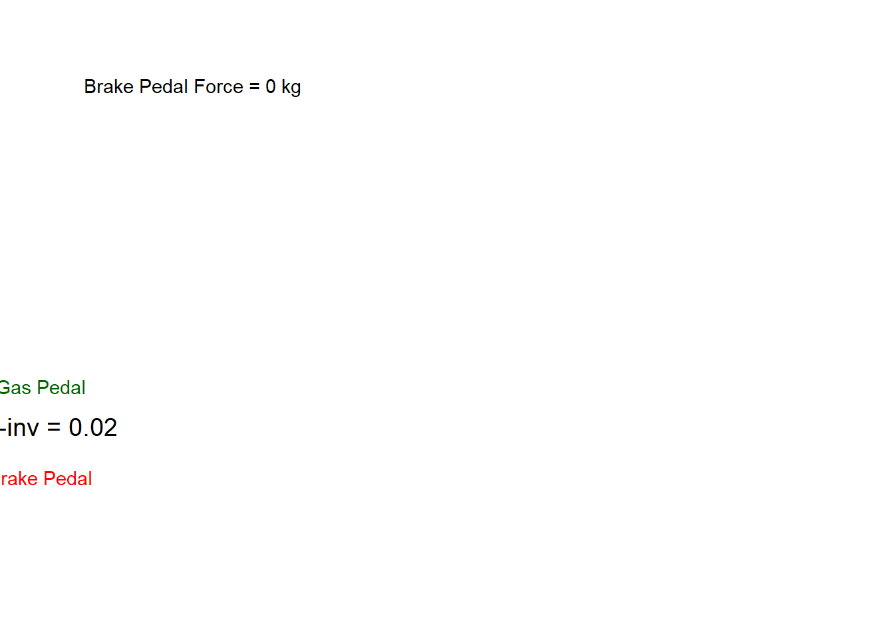
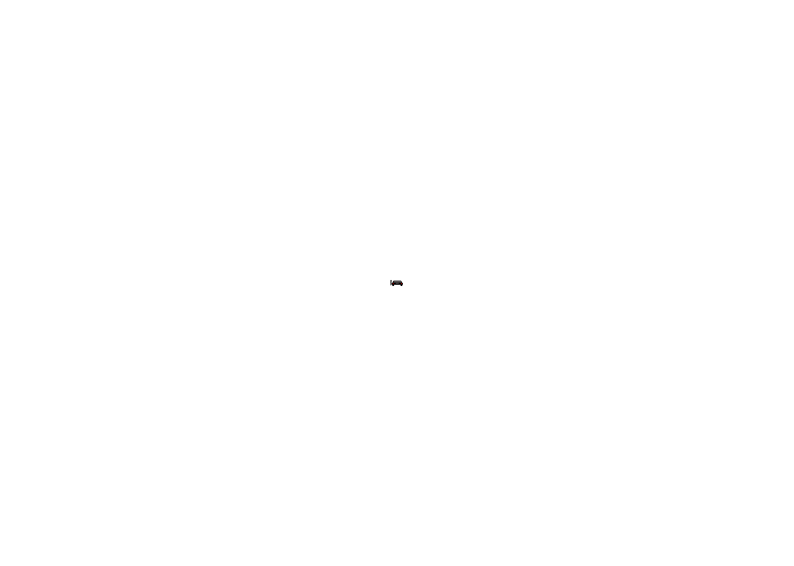

In a previous blogpost, I showed how to create a new geom to plot cars as seen from top and rear. This post is about animating them in a way to synchronie their timing.
gganimate package is a powerful animation package in R, but as of this writing, it does not have a function to combine multiple animations. So, we’ll use the magick package to combine the animations.
Load data
I am using a dataset that contains car positions, speed and distance (also called as spacing).
As discussed in the previous blogpost, I had to adjust the coordinates to make one car appear approaching another car. So, we estimate the first and last coordinates in the data to do that.
# Largest x coordinate of following vehicle------------------ first_ed_x_coord <- df %>%pull(ED_x_m) %>%range() %>%tail(1) last_ed_x_coord <- df %>%pull(ED_x_m) %>%range() %>%head(1)
Creating animations with gganimate
Now, the following code shows three animations created using gganimate.
The following animation shows how the gas and brake pedal positions change over time. The variable tau-inverse represents the inverse of time-to-collision (seconds until collision happens if cars don’t change their speeds).
# animation of pedals/looming---------------------------------------pedals_pos_b <-ggplot(data = df,mapping =aes(x = Time_s)) +geom_line(aes(y = tau_inv*10), color ="black") +geom_text(aes(y = tau_inv*10,label =paste("tau-inv =", round(tau_inv, 2))), color ="black",size =5) +geom_area(aes(y = tau_inv*10), fill ="gray",position ="identity", alpha=0.6)+geom_line(aes(y =scale(ED_gas_pedal_pos)), color ="darkgreen") +geom_text(aes(y =scale(ED_gas_pedal_pos)),label ="Gas Pedal", color ="darkgreen") +geom_line(aes(y =scale(ED_brake_pedal_force_kg)), color ="red") +geom_text(aes(y =scale(ED_brake_pedal_force_kg)),label ="Brake Pedal", color ="red") +geom_text(x=10, y =4, aes(label =paste("Brake Pedal Force =", round(ED_brake_pedal_force_kg), "kg"))) +theme_void() +transition_reveal(Time_s) pedals_pos_b

Driver’s front view
The following animation shows what the driver in the following car sees from the windscreen. It represents how the image of the lead vehicle grows on the following driver’s retina.
# animation of car rear---------------------------------------ani_retina_b <-ggplot(df ) +geom_car_rear(aes(x=0, y=0, length=visual_angle_W,width=visual_angle_H), fill="black") +theme_void() +theme(axis.text =element_blank(),axis.title =element_blank(),axis.ticks =element_blank())+coord_fixed(ratio =0.7) +transition_manual(Time_s) ani_retina_b
nframes and fps adjusted to match transition

Rendering animations and saving them
Now that the three animations are created, we can render them using gganimate::animate function. Without doing this, the animations are rendered every time we call them.